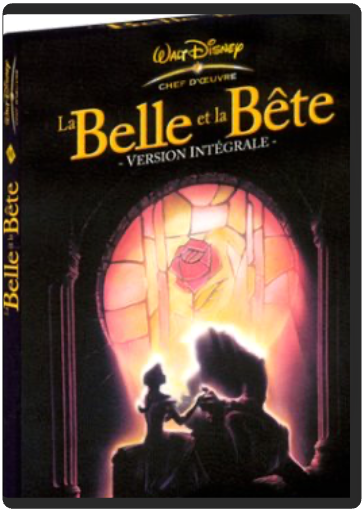
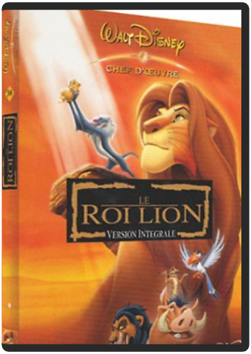

walt disney, 30 : taram et le chaudron magique, édition exclusive 25ème anniversairewalt disney walt disney, 30 : taram et le chaudron magique, édition exclusive 25ème anniversairewalt disney  A l'occasion de 25ème anniversaire du film, redécouvres le monde magique de prydain dans une version restaurée et remasterisée ! avec en prime de nombreux bonus pour cette édition exclusives ! - De Richard Rich, Ted Berman - DVD Zone 2. Pal . Paru le 6 octobre 2010 - Format image: 16/9 compatible 4/3 format respecté 1.66 - Durée (mn): 80 Minutes - Collection: Grands Classiques. walt disney, 36 : la belle et la bête - édition collectorwalt disney Oubliez le chef-d'œuvre de Jean Cocteau pour découvrir l'un des plus beaux dessins animés que le studio Walt Disney ait produits ces dernières années. La Belle et la Bête reprend cette magnifique histoire d'une jeune fille prisonnière dans la demeure d'une bête cachant un terrible secret. Tous les éléments sont présents pour faire de ce dessin animé une réussite. Les scènes de comédie musicale (les chansons sont parfaites) alternent avec les moments d'humour, d'effroi et d'émotion. Car La Belle et la Bête est avant tout une histoire d'amour très romantique incarnée par deux personnages au graphisme particulièrement travaillé. Et comme dans tout bon Walt Disney, de nombreux personnages attachants accompagnent les deux héros. Citons ici Mme Samovar, une théière bienveillante accompagnée de son fils, une mignonne petite tasse. De plus, on notera la participation finale de Charles Aznavour et de Liane Foly, interprètes d'une très belle ballade. Autant d'éléments qui font de ce long métrage l'une des très grandes réussites des studios Disney, toutes périodes confondues, présentée ici enfin dans sa version intégrale ! —Marc Maesen walt disney, 38 : le roi lion - édition collectorwalt disney Dans la savane africaine, le lion Mafusa, roi des animaux, et Sarabi donnent naissance à Simba. L’héritier pourrait grandir en paix s’il n’y avait Scar, le frère de Mafusa, dont la soif de pouvoir va le pousser à commettre l’irréparable… Pour le grand plaisir des fans de dessins animés, Le Roi Lion, le plus grand succès des studios Disney (sur le fil, semble-t-il, avec l’aquatique Nemo) sort enfin dans une édition exclusive double DVD. Pour l’occasion, Disney a fait les choses en grand et il y a largement de quoi contenter le chaland : pas moins de deux versions du film, un karaoké, des jeux, des scènes coupées et une suite de documentaires savoureux, appelés "safaris", sur les différents stades de fabrication du film. Un DVD plein de surprises et de magie. Un vrai bonheur au niveau de l’animation. Un cadeau idéal ! —George Maubeuge  walt disney, 42 : toy story 1walt disney walt disney, 42 : toy story 1walt disney A chaque anniversaire d'Andy, c'est la même chose ses jouets redoutent l'arrivée d'un nouveau venu qui pourrait les supplanter dans le coeur du petit garçon. Cette année là, la pire des prévisions va se réaliser : Buzz l'éclair, un cosmonaute électronique, fait une entrée triomphale. Bouleversant l'ordre des choses, il devient vite le héros d'Andy et des autres jouets. Détrôné et déshonoré, Woody le cow-boy est dès lors prêt à tout pour retrouver sa place de premier dans le coeur d'Andy et son statut de chef des jouets. |


 Made with Delicious Library
Made with Delicious LibraryNancy, State zipflap congrotus delicious library Thomas, Julien